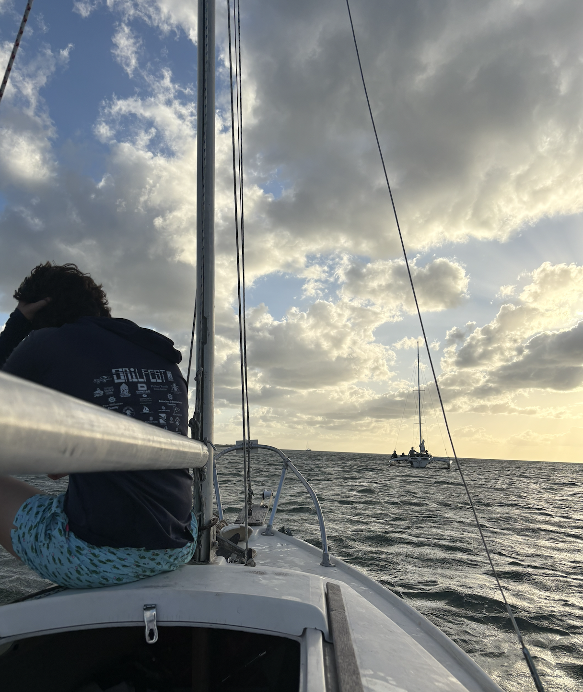
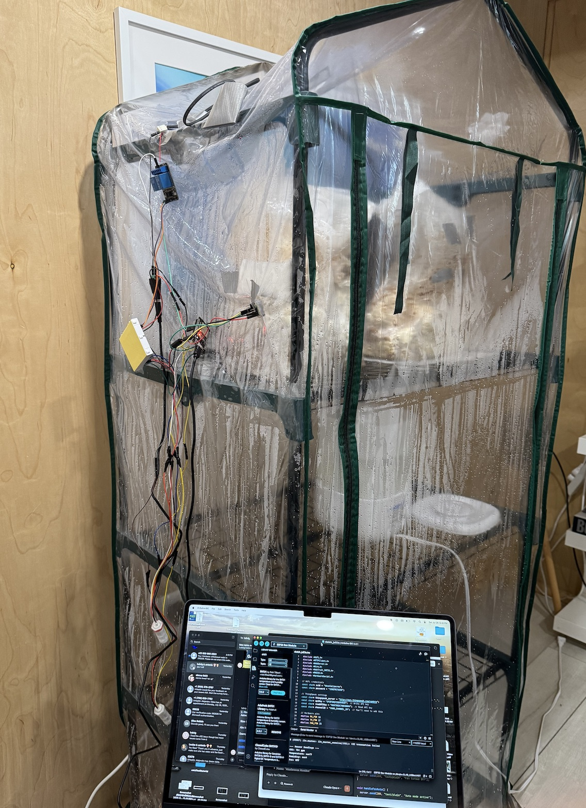
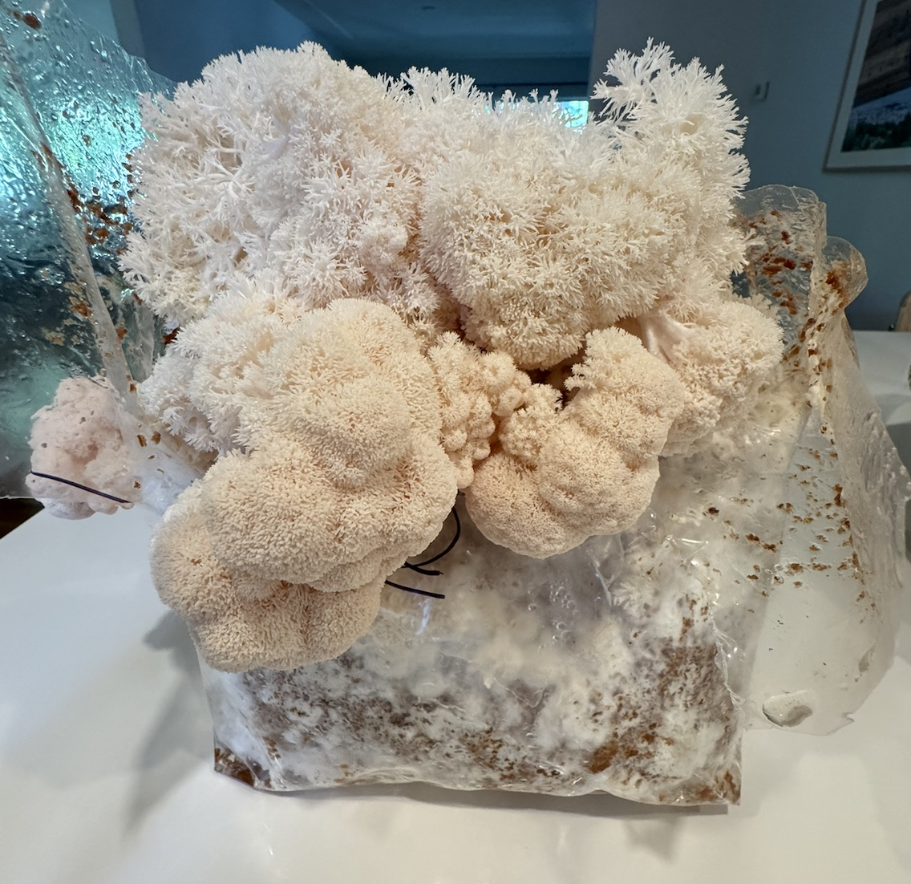

Interests

Sailing
I've competitively sailed Laser 4.7s and Radials for over 4 years. I also coached youth sailing for 3 years, teaching hundreds of sailors how to sail Optis and Lasers.
Travel
I love meeting new people, learning about cultures, and seeing new places. Here are some of the top places I've been so far:
Mycology
I have a fascination for mushrooms, from foraging to growing my own. I built an automated system to grow Lions Mane and King Oyster mushrooms.


Music
Some of my favorite albums.
Espresso
I am an espresso geek obsessed with brewing the perfect coffee. I have a Rancilio Silvia which I modified and a Niche Zero, along with many other coffee gadgets I optimize to extract the best shot possible.